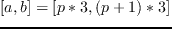
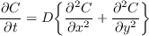
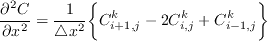
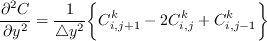
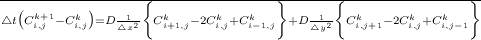

|  | (1) |
We will use the explicit finite difference method to solve this equation. The formulation is as follows:
Second order partial derivatives in the x and y direction:
|  | (2) |
|  | (3) |
Time derivative:
|  | (4) |
The partial differential equation in terms of finite difference formulas
Rearranging Equation 7.5

The explicit finite difference method requires small time steps in order to overcome the stability problem which makes it computationally expensive. However, this method is simple and easy to parallelize. The square domain is divided among two processes in Figure 7.6. Each process is responsible for one rectangular grid and the boundary elements are transferred to neighboring processes through message passing. Note that, in columnwise distribution, the boundary elements are contiguous in the memory and they can be transferred without using derived data types.
Now let us examine the program to see how to divide the domain among the processes; express the initial and boundary conditions in a parallel program; and also, generate output files.
#include <stdio.h>
#include <string.h>
#include <mpi.h>
#include <time.h>
#include <math.h>
#define SIZE 500
#define SPIKE_SIZE 5
/* take the minimum of two integers */
int imin(int a,int b){
if(a<=b) return a; else return b;
}
main(int argc, char* argv[]){
int my_rank,work1,work2;
int nprocs,cnt,tag=0;
int inext,iprev;
int row,col,i,j;
int N, M, ROOT,NT;
int COUNT,I,J,JSTA,JSTA2,JEND,JEND1;
int done;
double FLD[SIZE][SIZE], WKSP[SIZE][SIZE];
double DELTA,DELTAT,DELTAX;
double DELTAY,DELTA1,DELTA2;
double DF,L,T;
char hostname[25],filename[50];
int wallTime,starttime,endtime;
time_t startSec,endSec;
FILE * outf;
MPI_Status status;
MPI_Request send1,send2,recv1,recv2;
/*Start MPI*/
MPI_Init(&argc, &argv);
/*Find out process rank*/
MPI_Comm_rank(MPI_COMM_WORLD, &my_rank);
/*Find out the number of processes*/
MPI_Comm_size(MPI_COMM_WORLD, &nprocs);
/*integer ISTATUS(MPI_STATUS_SIZE)*/
/* Start the timer */
if(my_rank==0) {
startSec=time(NULL);
}
/* Initialize parameters */
N=SIZE;
M=SIZE;
T=10.0;
NT=100;
DELTAT=T/NT;
L=100.0;
DELTAX=L/(N);
DELTAY=L/(M);
DELTA1=DELTAT/pow(DELTAX,2.0);
DELTA2=DELTAT/pow(DELTAY,2.0);
DF=(pow(10.0,-4.0))*25.0;
done=0;
MPI_Comm_size(MPI_COMM_WORLD,&nprocs);
MPI_Comm_rank(MPI_COMM_WORLD,&my_rank);
/*distribute the array onto the processes. */
/*JSTA and JEND stand for the first and */
/*the last row mapped to each process. */
work1=SIZE/nprocs;
/*Determines the offset */
work2=SIZE%nprocs;
/*Distributes the extra columns to the */
/*processes. If mod()is 2 for example, */
/*an extra column will be mapped to */
/*process 0 and process 1*/
JSTA=my_rank*work1+imin(my_rank,work2);
if(my_rank<work2) JEND=JSTA+work1;
else JEND=JSTA+work1-1;
ROOT=(nprocs-1)/2;
JSTA2=JSTA;
JEND1=JEND;
if (my_rank==0) JSTA2=1;
if (my_rank==(nprocs-1)) JEND1=M-2;
inext=my_rank+1;
iprev=my_rank-1;
if (my_rank==(nprocs-1))inext=MPI_PROC_NULL;
if (my_rank==0) iprev=MPI_PROC_NULL;
/*Initial Conditions */
for(row=JSTA2;row<=JEND1;row++)
for(col=1;col<SIZE-1;col++)
FLD[row][col]=2.0;
/* for middle processor set spike value */
if (my_rank==ROOT){
for(i=0;i<SPIKE_SIZE;i++)
for(j=0;j<SPIKE_SIZE;j++)
FLD[(SIZE/2)-SPIKE_SIZE+i]
[SIZE/2-SPIKE_SIZE+j]=5.0;
}
/* Boundary Conditions*/
for(row=JSTA;row<=JEND;row++){
FLD[row][0]=1.0;
FLD[row][SIZE-1]=1.0;
}
if (my_rank==0) {
for(col=0;col<SIZE;col++)
FLD[0][col]=1.0;
}
if(my_rank==(nprocs-1)){
for(col=0;col<SIZE;col++)
FLD[JEND][col]=1.0;
}
/*Main Processing Loop */
/* set a counter to stop execution after some*/
/* sane number of itterations*/
cnt = 0;
while((!done)&&(cnt<2500)){
/* Transfer the boundary elements to */
/* neigboring processes */
MPI_Isend(&(FLD[JEND][0]),SIZE,MPI_DOUBLE,
inext,tag,MPI_COMM_WORLD,&send1);
MPI_Isend(&(FLD[JSTA][0]),SIZE,MPI_DOUBLE,
iprev,tag,MPI_COMM_WORLD,&send2);
MPI_Irecv(&(FLD[JSTA-1][0]),SIZE,MPI_DOUBLE,
iprev,tag,MPI_COMM_WORLD,&recv1);
MPI_Irecv(&(FLD[JEND+1][0]),SIZE,MPI_DOUBLE,
inext,tag,MPI_COMM_WORLD,&recv2);
MPI_Wait(&send1,&status);
MPI_Wait(&send2,&status);
MPI_Wait(&recv1,&status);
MPI_Wait(&recv2,&status);
/*Updates the concentration using the finite*/
/*difference formula */
for(row=JSTA2;row<=JEND1;row++)
for(col=1;col<SIZE-1;col++)
WKSP[row][col]=FLD[row][col]+
DELTA1*DF*(FLD[row+1][col]
-2.0*FLD[row][col]+FLD[row-1][col])
+DELTA2*DF*(FLD[row][col+1]
-2.0*FLD[row][col]+FLD[row][col-1]);
for(row=JSTA2;row<=JEND1;row++)
for(col=1;col<SIZE-1;col++)
FLD[row][col]=WKSP[row][col];
/*Check whether the concentration in the middle */
/*of the small square is below 3.0. */
/If so, change done to true */
if (my_rank==ROOT){
if(FLD[SIZE/2-SPIKE_SIZE/2]
[SIZE/2-SPIKE_SIZE/2]<=3.0){
done=1;
}
}
/*Collective Communication*/
/*"done" is transferred from root*/
/*to all processes*/
MPI_Bcast(&done,1,MPI_INT,ROOT,MPI_COMM_WORLD);
cnt++;
}
/*Opens a file for each process for I/O as*/
/*"diffout.my_rank"*/
sprintf(filename,"diffout.%d",my_rank);
if((outf=fopen(filename,"w+"))==NULL){
printf("unable to open file %s for
process %d\n",filename,my_rank);
exit(0);
}
for(row=JSTA;row<=JEND;row++){
for(col=0;col<SIZE;col++){
fprintf(outf,"%7.4f ",FLD[row][col]);
}
fprintf(outf,"\n");
}
if(my_rank == 0){
endSec=time(NULL);
wallTime=(int) (endSec-startSec);
fprintf(stderr,
"\n processing time %d seconds\n",wallTime);
}
MPI_Finalize();
}
The following figures show the initial and final states of the system.